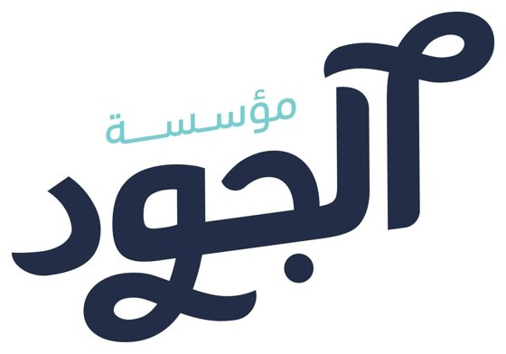
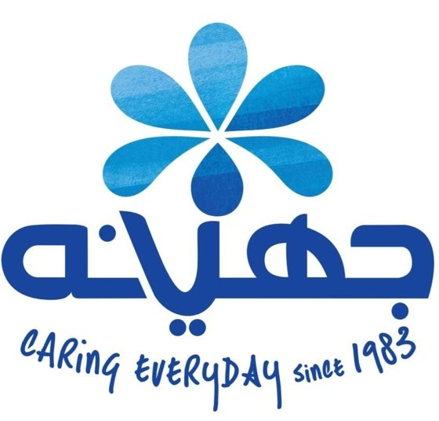

A football tournament for care leavers, played in merged teams. The second edition took place in Ramadan 2026, organized by Basmat Nour under the patronage of the Ministries of Social Solidarity and of Youth and Sports.
Every team is half young people from care homes and half company employees. They play on one pitch for one goal, meet without barriers, and see each other for who they are. Women have their own dedicated track.
2026 edition: Cairo, Giza, Qalyubia, Sharqia, Beheira, Menoufia and Minya.
 Watch the video
Watch the videoThe tournament grows to 7 governorates, with 16 teams in the men's tournament and 8 in the women's after the merge. It adds the Jusoor national team for under-17s, plus job, training and professional pathways.


Ramadan 2027. Participation is free. Registration is preliminary: the organizing committee reviews each request and then contacts you. Choose the track that fits you:
For care leavers and young people from care homes and foster families. Register a team of 4 players (all male or all female), aged 17 or older. You are paired by draw with a half-team from a partner organization.
Register a care-home teamRegister your organization's team of 4 players (all male or all female), aged 18 or older. It is paired with a half-team of young people from care homes and plays under your organization's name.
Register an organization teamThe first supporters of the Jusoor Tournament in Ramadan 2027. More sponsors will be added here soon.


Key links documenting the second edition of Jusoor: videos, photos and media coverage. Each link opens in a new tab. Some sources are in Arabic.
Basmat Nour coordinates Egypt's delegation to the 11th Hope for Mundial in Warsaw, in late May or early June 2027. Egypt is represented by the "Egypt Orphans National Team": 15 players under 17 and 5 staff. This is not only a football trip. It is a journey of building people.
Psychologists build each player's self-confidence and sense of belonging, with storytelling sessions led by care leavers who walked the road before them.
Two sessions a week at Wadi Degla Club pitches for six months, with camps that build discipline and team spirit.
Commitment, leadership, sportsmanship and responsibility, because the real championship is a young person moving from the seat of the receiver to the seat of the leader.
Nour Shabaan won the award in the category of best youth communication initiative, supervised by the Sharjah Government Media Office. He was honored by Dr. Maya Morsy, Egypt's Minister of Social Solidarity.